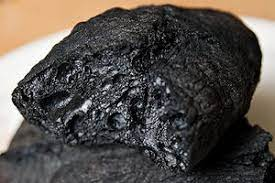

Burnt steak

Description
A pedazo de carne carbonizada, yummy
Ingredients
- An edible steak
- Hot
- Dispensable cooking device
- Sledgehammer
Steps
- Turn on the hot to the maximum till the air starts to get nervous
- Put cooking device (a pan, cooking plate, or whatever) into the hot yes yes
- Put the edible steak into the cooking device
- Let the edible steak sit there for a while. Be careful to not turn around
the steak so soon, we want to get the texture of the image above
- If you are doubting the steak is undercooked, let it sit there for two or
three more hours; you don't want to get poisoned for eating something raw!
- When the steak has a healthy void-black colour, it's time to get it out of the
used-to-be cooking device! Use your sledgehammer to separate the ingredients
Note: at this time you might want to turn on the air extractor
- Serve and enjoy!